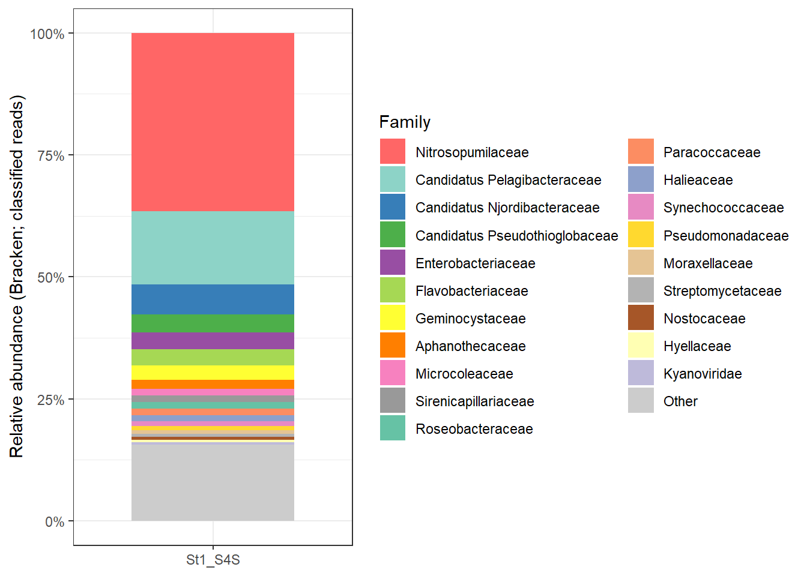
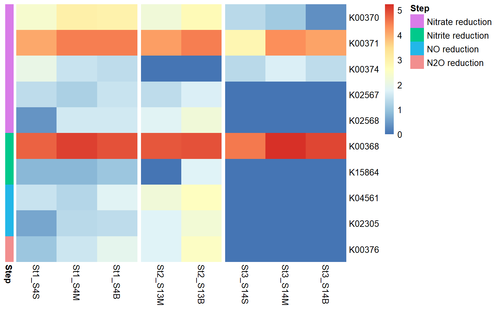

This report summarises the bioinformatics workflow applied to the Chukchi Sea eRNA samples to study the Nitrogen cycles, particularly the denitrifcation and anammox metabolic pathways, using metatranscriptomics approach.
🧪 Sample Processing, Sequencing & Data Availability
The Centre for Genomic Research (CGR) processed 9 marine eRNA samples (+ 1 negative control) for metatranscriptomic sequencing as part of project SSP203072. The workflow included:
DNase treatment of all extracted RNA samples.
rRNA depletion using the Seawater riboPOOL kit.
Construction of Illumina RNA-seq libraries from the rRNA-depleted material.
Multiplexing of all libraries and sequencing on one lane of an Illumina NovaSeq X Plus (NovaSeq X+) 25B flow cell.
This setup is expected to produce approximately ~325 million read pairs per sample, providing deep metatranscriptomic coverage suitable for resolving nitrogen-cycling pathways, including denitrification and anammox.
Funding & administrative details:
SSP ID: SSP203072
Platform: Illumina NovaSeq X+
Funding: NEOF1819 — Purchase Order P11212-200
All files—including raw data, processing details, and download instructions—are available via:
Description of Methods The raw FASTQ files are trimmed for the presence of Illumina adapter sequences using Cutadapt version 4.5 . The option -O 3 was used, meaning that trimming occurred in reads where at least 3bp of adapter sequence was observed at the 3’ end of the read. The reads were further trimmed to remove low quality bases with a minimum window quality score of 20. After trimming, reads shorter than 15 bp were removed. Only read pairs are retained, therefore if a read of a pair is trimmed away then the other read in the pair is also discarded.
Note📝 Notes on Low-Yield Samples
4-S13S returned an exceptionally low number of reads because very little RNA was recovered from the corresponding Sterivex filters. This limited input material resulted in poor library complexity and low overall sequencing yield.
10-negative_control is a processing negative control sample and therefore contains no biological RNA. The very low read count is expected and confirms that minimal contamination occurred during library preparation.
🧪 Bioinformatics Workflow
rRNA Removal – SortMeRNA
To enrich for mRNA and other non-rRNA transcripts, we removed ribosomal RNA using SortMeRNA.
The command below shows the SortMeRNA run that was used for each sample. We used the CGR-trimmed paired-end reads as input and the smr_v4.3_sensitive_db_rfam_seeds database for rRNA identification.
RNA_clean files containing the rRNA-depleted read pairs, which are carried forward to assembly.
De Novo Assembly – MEGAHIT
We performed a co-assembly of selected rRNA-depleted samples using MEGAHIT, optimised for complex metatranscriptomic data with the meta-sensitive preset. For illustration, the command below shows the co-assembly of samples:
Assembly statistics for an example MEGAHIT run (St1) were obtained using seqkit:
Code
seqkit stats final.contigs.fa
For example (St1 assembly):
Assembly
# Contigs
Total Length (bp)
Min Length (bp)
Mean Length (bp)
Max Length (bp)
final.contigs.fa
1,432,902
1,457,453,119
500
1,017.1
106,426
These statistics indicate a highly fragmented but deep assembly, typical of complex marine microbial metatranscriptomes, with contigs ≥500 bp retained for downstream analyses.
Read Mapping – Bowtie2 and Samtools
To quantify transcript coverage across assembled contigs, we mapped the rRNA-depleted reads back to the MEGAHIT assembly using Bowtie2, followed by BAM processing with Samtools.
First, we built a Bowtie2 index from the fixed assembly:
Then, for each sample, paired-end reads were aligned and processed as follows:
Code
IDX="St1_assembly-fixed"R1="SAMPLE_RNA_clean_fwd.fq.gz"R2="SAMPLE_RNA_clean_rev.fq.gz"THREADS=16OUT="St1_SAMPLE"Map paired-end readsbowtie2-x"${IDX}"-1"${R1}"-2"${R2}"-p"${THREADS}"-S"${OUT}.sam"Convert to BAM, keep mapped reads only (-F 4), sort and indexsamtools view -F 4 -bS"${OUT}.sam"-o"${OUT}-RAW.bam"samtools sort -@"${THREADS}""${OUT}-RAW.bam"-o"${OUT}.bam"samtools index "${OUT}.bam"
The resulting sorted and indexed BAM files (.bam, .bam.bai) are used as input for downstream coverage estimation and gene- or contig-level quantification in anvi’o.
Creating anvi’o Databases
Subsequent steps involved importing the assemblies and mapped reads into anvi’o to facilitate contig profiling, annotation, and interactive exploration of nitrogen-cycle genes (e.g. denitrification and anammox pathways).
In brief, the workflow included:
Creating a contigs database from the MEGAHIT assembly
Running HMMs and functional annotation (e.g. PFAM, TIGRFAMs, KOfam)
Profiling BAM files for each sample to obtain coverage and detection statistics
Merging profiles across samples for joint inspection and downstream analyses
Example (commands will vary slightly depending on environment and anvio version):
These anvi’o databases form the basis for functional annotation and visualisation of key nitrogen-cycle pathways in the Chukchi Sea metatranscriptomes.
🔍 Functional Annotation of genes
To characterise the metabolic potential represented in the metatranscriptomic assembly, we performed extensive functional annotation of the anvi’o contigs database. This step links assembled sequences to known protein families, orthologous groups, and taxonomic markers, enabling downstream interpretation of nitrogen-cycle genes (e.g., denitrification, anammox).
We used the following anvi’o annotation programs:
Code
anvi-run-hmms
Identifies single-copy core genes (SCGs) and key conserved protein families using anvi’o’s curated HMM collections. This provides quality metrics for assemblies and forms the basis for taxonomic inference.
Code
anvi-run-ncbi-cogs
Assigns Clusters of Orthologous Groups (COGs) from NCBI to contigs based on predicted open reading frames. COG categories help identify broad functional roles such as energy production, amino acid metabolism, stress response, etc.
Code
anvi-run-kegg-kofams
Annotates genes using KEGG Orthologs (KOfam HMMs), providing pathway-level information including nitrogen cycling modules (e.g., nitrate reduction, nitrification, denitrification, anammox).
Code
anvi-run-scg-taxonomy
Uses single-copy core gene content to infer taxonomic origin of contigs, giving insight into which microbial groups are contributing to specific nitrogen-cycling pathways.
🔬 Metabolic Reconstruction and Pathway Visualisation
Following functional annotation, we performed metabolic inference and pathway-level analysis using anvi’o’s metabolism suite. These tools integrate KEGG Ortholog (KOfam) annotations with curated pathway models to identify which biochemical pathways are represented in the dataset and to visualise how transcripts map onto specific metabolic processes—particularly those involved in nitrogen cycling.
We used the following anvi’o programs:
Code
anvi-estimate-metabolism
Identifies complete and partial KEGG modules across all annotated contigs, providing an overview of metabolic potential (e.g., denitrification, dissimilatory nitrate reduction, anammox).
Code
anvi-reaction-network
Generates reaction-centric metabolic networks based on KEGG reactions detected in the assembly. This allows exploration of how individual reactions connect into broader nitrogen pathways.
Code
anvi-draw-kegg
Renders KEGG metabolic pathway diagrams annotated with detected genes, enabling visual inspection of pathway completeness and highlighting which steps are supported by metatranscriptomic evidence.
These tools collectively provide a pathway-level view of nitrogen cycling activity in the Chukchi Sea microbial community, enabling detailed interpretation of expression patterns associated with denitrification, nitrification, and anammox processes.
KEGG module M00529 (Denitrification, nitrate → nitrogen). Diagram from https://www.genome.jp/dbget-bin/www_bget?md:M00529
From the output of anvi-estimate-metabolism, we can look for the KEGG module for Denitrification (M00529) and look at its completeness:
KEGG Module
Station
stepwise_module_completeness
pathwise_module_completeness
M00529
Station_1
1.00
1.00
M00529
Station_2
1.00
1.00
M00529
Station_3
1.00
1.00
So all the genes required for denitrification to occur seem to be detected at each of the stations.
Let’s look at the denitrification pathway in more details using anvi-interactive, so we can see the coverage of the genes involved in denitrification across the 3 depths in the stations.
First, we need to create an anvi’o collection that contains all the denitrification genes. Using anvi-export-functions we can get the gene_callers_ids matching your KO IDs, then we can get the contigs name using anvi-export-table –table genes_in_contigs. After that we need to use join to find the contigs that have the genes of interest and finally we need to add “_split_00001” to each contig name (because in this case each contig has only one split as these come from metaT assembly. We ad a column with the name of our bin and then can import that using anvi-import-collection
Code
anvi-export-functions-c St1_contigs.db -o St1_gene_functions.tsvanvi-export-table--table genes_in_contigs -o St1_genes_in_contigs.tsv St1_contigs.dbtail-n +2 St1_genes_in_contigs.tsv |cut-f1,2> gene_to_contig.tsv# KO list for denitrification (edit/add as needed)KOS='K00370|K00371|K00374|K02567|K02568|K00368|K15864|K04561|K02305|K00376'# Get unique gene_callers_id hits for those KOsawk-F'\t'-v kos="$KOS"'($3 ~ kos){print $1}' St1_gene_functions.tsv |sort-u> genes_of_interest.idsjoin-t$'\t' genes_of_interest.ids gene_to_contig.tsv |cut-f2|sort-u> contigs_of_interest.txtawk'{print $1"_split_00001\tdenitrification"}' contigs_of_interest.txt > denitrification_splits_collection.tsvanvi-import-collection-p St1_MERGED/PROFILE.db -c St1_contigs.db -C denitrification_splits denitrification_splits_collection.tsv
Now that we have an anvio collection, we need to “split” it from the main contigs and profile databases (we create a subset). This is because our initial contigs.be has too many splits (1,432,906 splits to be precise) and hierarchical clustering gets turned off.
Once it is splitted we can find a directory called “denitrifications_splits” in which we find a contigs and profile database that we can now plot using anvi-interactive.
First, we will import the data about the presence/absence of the genes of interest (from Module M00529) so we can visualise where they are found.
Code
anvi-export-functions-c CONTIGS.db -o gene_functions.tsv# 1) Define your KO list (space-separated)KOS="K00370 K00371 K00374 K02567 K02568 K00368 K15864 K04561 K02305 K00376"# 2) Build gene-level KO presence/absence from gene_functions.tsv (KO is column 3)awk-F'\t'-v OFS='\t'-v kos="$KOS"'BEGIN{ n = split(kos, k, " ") for (i=1; i<=n; i++) KO[k[i]] = 1 printf "gene_callers_id" for (i=1; i<=n; i++) printf "%s%s", OFS, k[i] printf "\n"}NR==1 { next } # skip header{ gene = $1 acc = $3 genes[gene] = 1 if (acc in KO) present[gene, acc] = 1}END{ for (g in genes) { printf "%s", g for (i=1; i<=n; i++) { ko = k[i] v = ((g SUBSEP ko) in present) ? 1 : 0 printf "%s%d", OFS, v } printf "\n" }}' gene_functions.tsv > KO_presence_absence_by_gene.tsv# 3) Map gene_callers_id -> contig (requires genes_in_contigs.tsv from anvi-export-gene-calls)# Then collapse to contig-level by OR (max) across genesawk-F'\t'-v OFS='\t''NR==FNR { if (FNR==1) next gene2contig[$1] = $2 next}FNR==1 { print "contig", substr($0, index($0, "\t")+1); ncol=NF; next }{ gene = $1 contig = (gene in gene2contig) ? gene2contig[gene] : "NA" contigs[contig]=1 for (i=2; i<=NF; i++) if ($i==1) M[contig, i]=1}END{ for (c in contigs) { printf "%s", c for (i=2; i<=ncol; i++) { v = ((c SUBSEP i) in M) ? 1 : 0 printf "%s%d", OFS, v } printf "\n" }}' genes_in_contigs.tsv KO_presence_absence_by_gene.tsv > KO_presence_absence_by_contig.tsv# 4) Convert contig names to split names (naive: appends _split_00001)awk-F'\t'-v OFS='\t''FNR==1 { $1="item_name"; print; next }{ $1 = $1 "_split_00001"; print }' KO_presence_absence_by_contig.tsv > KO_presence_absence_by_split.tsv# Import the data to the PROFILE.dbanvi-import-misc-data-p PROFILE.db -t items KO_presence_absence_by_split.tsv
Anvi’o interactive plot showing the presence/absence of transcript annotation associated with denitrification in station 1.
From this plot we see that:
K00370 (narG) and K00371 (narH) are annotated on the same transcript (bin 1 on figure) which makes sense as they are subunits of the same nitrate reductase enzyme complex. In many bacterial genomes, narG and narH are directly adjacent and commonly co-transcribed as part of a nitrate reductase operon. For example, in E. coli the nar operon appears to contain four genes designated narGHJI (https://pmc.ncbi.nlm.nih.gov/articles/PMC211023/pdf/jbacter00182-0317.pdf).Operons are typically transcribed as one long mRNA. Hence, having multiple functions on one transcript here is not surprising.
Transcripts are annotated with the same gene multiple times. Different microbial populations likely have slightly different sequences for these genes, hence they get assembled into multiple different versions instead of collapsed by the assembler into one sequence. Hence, having multiple transcript with the same function is not surprising.
From the coverage data layers, we can see that all the transcripts have coverage from sample S4B (Bottom) ans most for sample S4M (Mid-water) but some might be missing from sample S4S (Surface). Therefore, let’s look at the completeness of denitrification per depth instead of for the whole station.
From the output table we see that, the denitrification module (M00529) shows differences in both abundance (average coverage) and completeness (average detection) across samples. St1_S4S exhibits substantially lower coverage and detection, indicating a reduced presence and/or partial representation of the denitrification pathway in the surface sample. In contrast, St1_S4M and St1_S4B show much higher coverage and detection values, consistent with a more abundant and more complete denitrification potential in deeper waters. Notably, St1_S4B shows the highest detection, suggesting the most complete representation of the pathway among the three samples. Given that denitrification is surely happening in the sediments, this result makes sense.
Sample
Avg. Coverage
Avg. Detection
St1_S4S
975.53
0.454
St1_S4M
2032.39
0.787
St1_S4B
1706.59
0.859
The table below provides a gene-level breakdown of the denitrification module (KEGG M00529), linking each predicted gene (Gene_ID) to its corresponding KEGG Ortholog (KO) and its sequencing coverage in three samples (St1_S4B, St1_S4M, and St1_S4S).
Gene_ID
KO
St1_S4B_coverage
St1_S4M_coverage
St1_S4S_coverage
1359363
K00368
20.2724
20.0305
0.0000
691166
K00368
165.5046
334.5195
13.3177
707695
K00368
41.8570
69.1358
12.5575
687620
K00368
1282.9247
2415.3629
243.7858
700737
K00368
2478.6866
2384.1486
1253.8170
854256
K00368
11.4167
3.3309
5.3478
1185346
K00368
28.9579
5.8295
7.4308
941749
K00368
38.1338
27.6934
5.3577
1709903
K00368
105.2276
88.9237
34.8610
1705673
K00368
344.4583
682.0183
178.3852
65438
K00368
6.3643
5.1628
6.0814
1031617
K00368
689.8963
1204.7898
165.6266
26013
K00368
12.4952
12.8188
15.1860
1787639
K00368
9.6738
18.6717
17.9031
888296
K00368
40.1019
45.6324
5.3630
895831
K00368
49445.2245
52866.8920
44637.3724
882932
K00368
14.2161
18.0897
8.2637
87959
K00368
10915.1630
11415.0249
4717.4411
994614
K00368
1.9337
17.4825
0.0000
1617538
K00368
14.7141
12.2627
18.9873
1348289
K00368
19.2252
17.7117
3.4054
411974
K00368
12.5977
27.5419
0.0000
441287
K00368
145.1941
279.3881
10.4268
516928
K00368
14.6225
4.1400
0.0000
19512
K00368
9.0578
9.2244
0.0000
189833
K00368
16223.0362
32930.3351
3152.7518
443514
K00368
34.8817
66.0895
4.2496
823538
K00368
935.0735
1874.6680
392.6050
1814075
K00368
69.7314
164.8157
0.0000
742645
K00370
878.6661
1009.9220
251.1167
594150
K00371
2.4505
14.2871
6.3498
1363937
K00371
10.2119
3.3420
16.6811
815415
K00371
0.7502
9.2725
26.9735
85995
K00371
7687.8341
7547.8975
2080.3177
144516
K00371
55.7631
69.1036
41.3231
433983
K00371
8190.7754
7206.5446
2536.7527
528599
K00371
1780.6823
1350.2175
893.7160
742644
K00371
691.1526
522.5736
229.5579
772410
K00371
12746.2707
12521.7199
4925.9703
894284
K00371
523.0258
645.8185
215.0751
1228756
K00371
78.4240
116.4395
19.8915
747852
K00374
17.9413
5.8443
32.5668
123437
K00374
4.6273
7.1632
29.0478
815414
K00374
0.0000
8.0645
24.4382
474316
K00374
1.3157
6.2746
3.1953
123436
K00374
0.0000
4.4774
18.0989
1743784
K00376
11.0827
4.6706
1.3333
296938
K00376
23.3961
8.4638
4.3466
239047
K00376
16.0931
8.2598
3.6313
110498
K00376
5.2941
8.1390
0.0000
374090
K00376
9.8702
1.9231
0.0000
793456
K00376
8.9385
0.0000
0.0000
921128
K00376
9.3483
4.0896
0.0000
1401364
K02305
8.4604
3.2278
0.0000
1445710
K02305
14.9201
16.6901
2.8947
1753152
K02567
11.9600
9.6693
4.4833
1433084
K02567
12.6263
2.1465
0.0000
1852908
K02567
4.2483
2.2242
20.1092
1168575
K02568
5.9083
11.0201
1.5839
648640
K02568
5.2407
2.0864
0.0000
1431702
K02568
7.0235
4.4507
0.0000
481953
K02568
18.7030
19.8397
0.0000
685198
K04561
17.1011
0.2232
0.0000
1271679
K04561
11.4956
3.5383
0.0000
468297
K04561
11.6298
5.9309
0.0000
252981
K04561
21.7907
1.7374
29.5610
540786
K04561
3.4200
7.7399
0.7168
1468402
K15864
9.0891
5.8108
5.5743
Multiple gene copies are associated with several key denitrification steps, indicating some degree of functional redundancy within the pathway. Gene coverages are generally higher in St1_S4B and St1_S4M than in St1_S4S, where several components show low or zero coverage, suggesting a reduced or incomplete representation of the pathway in this sample. A small number of genes display particularly high coverage, implying that certain denitrification functions may be more prevalent than others across the dataset.
Now using the table above, we can list for each sample the Gene_IDs and KOs with nonzero coverage and you can turn that list into into an enzymes-txt file which can be used to calculated the denitrification completeness score for each sample, using:
Code
anvi-estimate-metabolism--enzymes-txt
Sample
Module
Stepwise completeness
Pathwise completeness
Proportion of unique enzymes present
Enzymes unique to module
Unique enzyme hit counts
St1_S4S
M00529
1
1
1
K00376, K02305, K04561
3, 1, 2
St1_S4M
M00529
1
1
1
K00376, K02305, K04561
6, 2, 5
St1_S4B
M00529
1
1
1
K00376, K02305, K04561
7, 2, 5
All three samples (St1_S4S, St1_S4M, and St1_S4B) show complete denitrification pathways according to both stepwise and pathwise KEGG module criteria, indicating that all required enzymatic steps from nitrate to N₂ are represented.
The number of hits for the unique enzymes differs among samples. St1_S4B and St1_S4M show higher hit counts for most of the unique enzymes compared to St1_S4S, suggesting that these functions are represented by more gene transcripts or more abundant RNAs in these samples.
Together, these results suggest that the denitrification pathways is fully expressed in all three samples, but its relative transcription representation appears to be lower in St1_S4S than in St1_S4M and St1_S4B.
Mapping transcripts to genomes of potential denitrifiers
The reference genomes listed in this table represent marine prokaryotes that are ecologically plausible contributors to denitrification in Arctic shelf waters such as the Chukchi Sea.
bracken\-d /dssgfs01/scratch/ote_db/kraken/kraken_standard-16 \-i St1_S4S_report.txt \-o St1_S4S.bracken.F \-r 150 \-l F
Code
# 1) Convert Kraken2 output to Krona inputcut-f2,3 St1_S4S_kraken.out > St1_S4S.krona.tsv# 2) Make the Krona HTMLktImportTaxonomy-t 2 -m 3 -o St1_S4S_krona.html St1_S4S.krona.tsv
Approximately 17% of metatranscriptomic reads could be taxonomically classified using Kraken2 with the standard database (16 GB). Krona plots were therefore generated using classified reads only, and complementary family-level profiles were produced using Bracken.
Station 4

Station 13

Station 14
Tara Oceans Arctic data as reference
Rationale and overview
As no site-matched metagenomic data were available for these samples, a reference-based approach was adopted using publicly available metagenomic data from the Tara Oceans Arctic expedition (Station 194), representing the closest comparable marine Arctic microbial communities currently available.
The EBI MGnify overview for analysis MGYA00607610 showing summary metadata and processed metagenomic results for a public datase is here: https://www.ebi.ac.uk/metagenomics/analyses/MGYA00607610#overview The assembly metadata is there: https://www.ebi.ac.uk/metagenomics/assemblies/ERZ7463204
This strategy enables the detection and quantification of expressed genes that are conserved between Arctic marine microbial communities, while acknowledging that locally specific taxa or gene variants not present in the reference dataset may not be captured.
Assembly of Tara Oceans Arctic metagenomes
Raw metagenomic reads from the Tara Oceans Arctic expedition were assembled de novo using MEGAHIT, which is optimized for large and complex metagenomic datasets. The resulting assembly produced a set of contigs representing microbial genomic fragments present in Arctic marine surface waters.
These contigs were subsequently used as a reference database for read mapping. While the Tara Oceans sampling locations do not overlap geographically with the Chukchi Sea, they provide a comprehensive representation of Arctic marine microbial diversity and metabolic potential, particularly for conserved biogeochemical pathways such as nitrogen cycling.
Metatranscriptomic read processing and mapping
Quality-filtered metatranscriptomic reads were mapped to the Tara Oceans Arctic contigs using Bowtie2 with default end-to-end alignment settings. Mapping was performed in paired-end mode to improve alignment specificity. Both concordant and discordant alignments were reported, although downstream analyses focused on concordantly mapped read pairs.
Mapping performance and alignment statistics
Across samples, overall alignment rates ranged from 15.8% to 27.3% of paired-end reads mapping to the Tara Oceans Arctic contigs. The majority of reads aligned concordantly exactly once (11–18%), with a smaller proportion aligning to multiple locations (3–6%). Discordant alignments accounted for approximately 0.5–1% of read pairs.
These mapping rates are consistent with expectations for metatranscriptomic datasets mapped to non-site-matched metagenomic references, particularly in polar marine systems where microbial communities exhibit strong spatial structure and strain-level diversity. The observed alignment patterns suggest that a substantial fraction of expressed genes in the Chukchi Sea microbial community are shared with, or closely related to, those represented in the Tara Oceans Arctic metagenomes.
Interpretation and limitations
This reference-based approach enables the identification and relative quantification of expressed genes that are conserved across Arctic marine microbial communities, including key genes involved in nitrogen cycling. However, transcripts derived from locally unique taxa or divergent gene variants absent from the Tara Oceans reference assembly are unlikely to be captured, resulting in an underestimation of total transcript diversity and expression.
Consequently, analyses based on this approach focus on relative expression patterns of nitrogen-cycle gene families represented in the reference dataset, rather than absolute transcript abundances or the absence of specific metabolic pathways. Despite these limitations, the approach provides a robust framework for exploring nitrogen cycling activity in the Chukchi Sea in the absence of site-specific metagenomic data.
# 1) Download the catalog of all genomes and files:curl-O https://sunagawalab.ethz.ch/share/microbiomics/ocean/db/2.0/data/catalogs/OMDBv2.0_data.tsv.gz# 2) Unzip itgunzip OMDBv2.0_data.tsv.gz# 3) Use it to download the MAGs associated with SAMEA4397903grep"TARA_SAMEA4397903_MAG_" OMDBv2.0_data.tsv |cut-f4|xargs-n 1 curl -O
Now I want to change the name of the MAGs so they show the name of the species they have been associated to:
Maybe the denitrifiers were not binned into complete enough MAGs so they didn’t end in OMDB repository… Let’s check if we can find the genes in the Tara Ocean metaG dataset.
KO ID
Description
K00374
Nitrate reductase gamma subunit (NarI)
K00368
Nitrite reductase (NO-forming)
K02305
Nitric oxide reductase subunit C
K04561
Nitric oxide reductase subunit B
K00376
Nitrous-oxide reductase
Note: The denitrification pathway is nearly complete. The two missing genes, K00370 (narG) and K00371 (narH), encode the catalytic subunits of the membrane-bound nitrate reductase (Nar) complex. Their absence is notable given the presence of K00374 (narI), the gamma subunit of the same enzyme complex. This suggests that the complete Nar enzyme is likely present in the environment, but that the missing subunits were not captured in the sequencing data or reconstructed during assembly, rather than being truly absent from the system.
KEGG Map of Nitrogen Pathways
KEGG map of Nitrogen metabolic pathways. Diagram from anvi’o and KEGG. In green are the genes present in anvio contig database for Station 1


 2:45 AM on September 8, 2013 (UTC)
2:45 AM on September 8, 2013 (UTC)